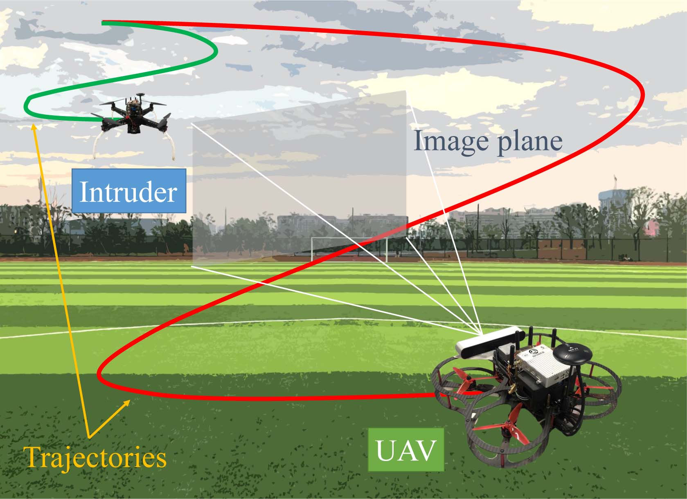
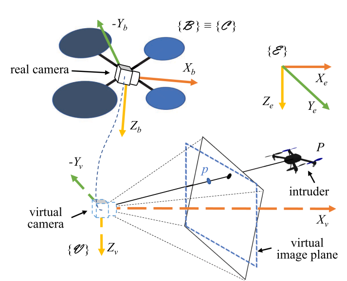
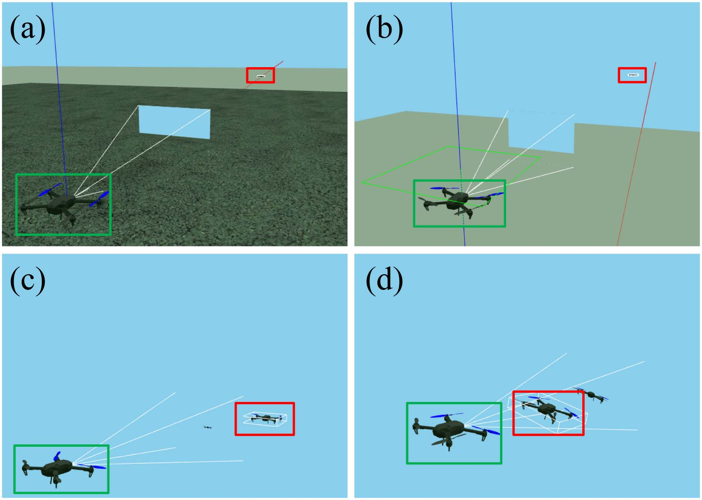
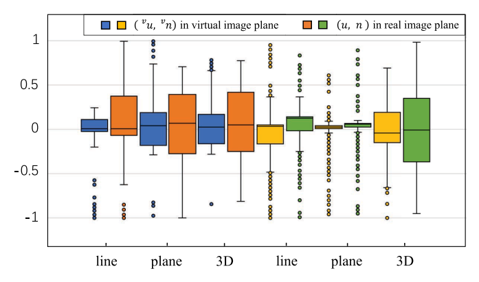
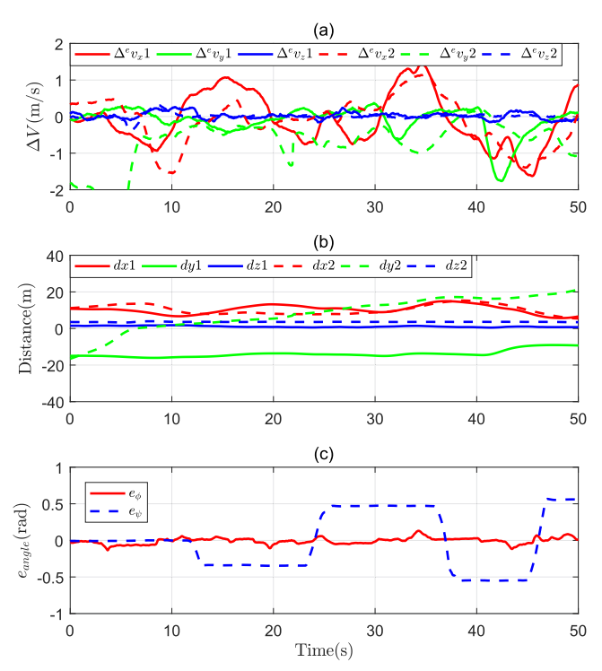

| Title | Image-Based Visual Servoing of Quadrotors to Arbitrary Flight Targets（基于图像的视觉伺服用于四旋翼追踪任意飞行目标） |
| Authors | Guojie Wang（王国杰）、Jiahu Qin（秦家虎，corresponding，IEEE Senior Member）、Qingchen Liu（刘庆晨）、Qichao Ma（马麒超，IEEE Member）、Cong Zhang（张聪） |
| Affiliation | 中国科学技术大学（University of Science and Technology of China, USTC），自动化系；秦家虎同时隶属于合肥综合性国家科学中心人工智能研究院 |
| Venue | IEEE Robotics and Automation Letters (RA-L)，2023年4月，Vol. 8, No. 4, pp. 2022–2029 |
| DOI / Links | 10.1109/LRA.2023.3245416 | Received: 2022-08-04 | Accepted: 2023-01-22 | Published: 2023-02-15 |
| TL;DR | 针对四旋翼无人机在三维空间中追踪任意自由飞行目标的难题，提出了一种基于虚拟相机（virtual camera）方法的 IBVS 控制方案。核心创新：（1）通过将目标点重投影到始终垂直于地面的虚拟图像平面，消除了俯仰和偏航运动对图像误差的耦合影响；（2）提出改进的图像误差项，使误差中位数和四分位距分别降低 22.37% 和 35.10%；（3）基于完整动力学模型（而非简化模型）设计控制器，在仿真和实物实验中均验证了对直线、正弦、螺旋线三种目标轨迹的有效跟踪。 |
| Inspiration Source | → What Insight It Inspired | Type |
|---|---|---|
| 虚拟相机方法在固定/平面目标 IBVS 中的应用（Lee et al. 2012; Zheng et al. 2017） | → 将虚拟相机的 Xv 轴始终对齐世界坐标 Xe 轴，可以将俯仰/偏航从视觉伺服动力学中解耦。但此前工作均假设目标固定或仅作平面运动——本文首次将这一思路推广到三维空间任意运动目标 | 架构 |
| 完整动力学模型 vs 简化动力学模型（Yang & Quan 2020 的局限） | → 简化模型（假设 φ, θ ≈ 0）限制了无人机的机动能力，无法应对目标的大范围机动。本文基于完整刚体动力学设计控制器，保留了姿态回路的全部自由度，使跟踪飞行器可以执行更大范围的姿态调整 | 方法 |
| Lyapunov 稳定性分析 + 充分条件推导 | → 通过构造 Lyapunov 函数 $V_i = \frac{1}{2}e_i^T e_i$，推导出飞行速度与目标距离之间的权衡条件：$v_x^2 + v\dot{v}_x \le k_1$——即距离越远时跟踪速度不能太快，否则容易丢失特征。这个条件为实际飞行中的速度规划提供了理论指导 | 数学 / 控制 |
| KCF（Kernelized Correlation Filter）在线视觉跟踪 | → 在实物实验中，使用 KCF 算法在视频帧中实时跟踪入侵者目标，为 IBVS 控制器提供连续的目标图像坐标。将经典计算机视觉跟踪器与控制理论结合，形成了完整的感知-控制闭环 | 工程 / 集成 |
flowchart TB
subgraph PERCEPTION["感知层 — 视觉输入"]
direction LR
CAM["前视单目相机 · 640×480 · 20fps · FOV 1.047rad"]
KCF["KCF在线跟踪器 · 首帧手动框选 · 逐帧输出目标中心坐标"]
end
subgraph VIRTUAL["虚拟相机层 — 动态解耦"]
direction LR
PROJECT["重投影: 真实图像平面 → 虚拟图像平面 · Xv∥Xe"]
DECOUPLE["解耦效果: 特征运动与俯仰/偏航无关 · rv∈R⁴"]
JACOBIAN["图像雅可比 Jv · 透视投影方程"]
end
subgraph CONTROL["控制层 — 控制器设计"]
direction LR
ERR["改进误差: ei = p - pd · pd=[0,0]ᵀ"]
TRANS["平移控制: vvy=k1·vu · vvz=k2·vn · 推力f"]
ROLL["滚转控制: ω1 指数稳定 · φd=0"]
YAW["偏航阻尼: ω3=kψ(ψ-ψd) · ψd=0"]
end
subgraph PLATFORM["平台层 — 四旋翼硬件"]
direction LR
IMU["IMU · 角速度+欧拉角估计"]
PX4["Pixhawk自驾仪 · PX4固件"]
MOTOR["电机控制信号 · 推力+三轴力矩"]
end
CAM --> KCF
KCF --> PROJECT --> DECOUPLE --> JACOBIAN
JACOBIAN --> ERR
ERR --> TRANS
ERR --> ROLL
ERR --> YAW
TRANS --> MOTOR
ROLL --> MOTOR
YAW --> MOTOR
MOTOR --> PX4
IMU --> ROLL
IMU --> YAW
IMU --> PROJECT
ROLL -.->|"指数收敛 · eφ→0"| ERR
YAW -.->|"偏航稳定 · ψ→0"| DECOUPLE
TRANS -.->|"稳定性条件 · vx²+v·vx≤k1"| ERR
classDef percept fill:#fef7ed,stroke:#f59e0b,stroke-width:2px,color:#92400e
classDef virtual fill:#e8f0fe,stroke:#3b82f6,stroke-width:2px,color:#1d4ed8
classDef control fill:#f0ebfd,stroke:#8b5cf6,stroke-width:2px,color:#6d28d9
classDef platform fill:#e6f7ee,stroke:#10b981,stroke-width:2px,color:#047857
class CAM,KCF percept
class PROJECT,DECOUPLE,JACOBIAN virtual
class ERR,TRANS,ROLL,YAW control
class IMU,PX4,MOTOR platform
flowchart TB
subgraph IMAGE["图像采集与目标检测"]
direction LR
FRAME["相机帧 640×480@20fps"] --> DETECT["KCF跟踪器 · 输出(u,v)真实图像坐标"]
end
subgraph REPROJ["虚拟相机重投影"]
direction LR
RPY["IMU提供 φ,θ,ψ 欧拉角"] --> RV["构造旋转矩阵 Rv"]
COORD["真实坐标(u,v)"] --> VIRT["虚拟图像平面坐标(vu,vn)"]
RV --> VIRT
end
subgraph CTRL["反馈控制计算"]
direction LR
ECOMP["误差计算: ei=[vu,vn]ᵀ-[0,0]ᵀ"] --> TRANS_CMD["平移指令: vvy=k1vu, vvz=k2vn"]
ECOMP --> THRUST["推力计算: f=f(φ,θ,vvz,vn,m,g)"]
ECOMP --> ROLL_CMD["滚转指令: ω1=-sφtθ·ω2-cφtθ·ω3-kφeφ"]
ROLL_CMD --> OMEGA["角速度指令 ω = [ω1,ω2,ω3]ᵀ"]
YAW_CMD["偏航指令: ω3=kψ(ψ-0)"] --> OMEGA
end
subgraph EXEC["执行与状态反馈"]
direction LR
THRUST --> MOTORS["Pixhawk · 电机PWM"]
OMEGA --> MOTORS
MOTORS --> QUAD["四旋翼 · m=1.55kg · J=diag{...}"]
QUAD --> STATE["状态反馈: ξ,V,φ,θ,ψ,Ω"]
STATE --> RPY
end
IMAGE --> REPROJ --> CTRL --> EXEC
STATE -.->|"循环: 20Hz视觉+高频IMU"| FRAME
classDef img fill:#fef7ed,stroke:#f59e0b,stroke-width:2px,color:#92400e
classDef reproj fill:#e8f0fe,stroke:#3b82f6,stroke-width:2px,color:#1d4ed8
classDef ctrl fill:#f0ebfd,stroke:#8b5cf6,stroke-width:2px,color:#6d28d9
classDef exec fill:#e6f7ee,stroke:#10b981,stroke-width:2px,color:#047857
class FRAME,DETECT img
class RPY,RV,COORD,VIRT reproj
class ECOMP,TRANS_CMD,THRUST,ROLL_CMD,YAW_CMD,OMEGA ctrl
class MOTORS,QUAD,STATE exec
flowchart TD
subgraph INIT["阶段1: 系统初始化与起飞"]
direction LR
I1["地面待命 · 预检传感器/估计器"] --> I2["Position模式起飞 · 悬停10m高度"] --> I3["切换Offboard模式 · 相机启动"] --> I4["首帧手动框选入侵者 · KCF初始化"]
end
subgraph TRACK["阶段2: 视觉伺服追踪循环"]
direction LR
T1["KCF逐帧输出目标中心 (u,v)"] --> T2["虚拟相机重投影 → (vu,vn)"] --> T3["计算图像误差 ei = (vu,vn)-(0,0)"] --> T4["控制器输出: 推力f + 角速度ω"]
end
subgraph CONVERGE["阶段3: 逐步逼近目标"]
direction LR
C1["平移控制引导接近 · vvy=k1vu"] --> C2["距离估计算法: d≈(Ne/N)·de"] --> C3["d < d*时停止前向逼近 · vvx=0"] --> C4["图像误差 ei→0 · 目标居中"]
end
subgraph COMPLETE["阶段4: 追踪完成"]
direction LR
M1["图像补丁居中 · vu→0, vn→0"] --> M2["距离收敛 · UAV靠近入侵者"] --> M3["追踪目标达成 · 监控/拦截就绪"]
end
INIT -->|"开始追踪"| TRACK
TRACK -->|"误差收敛"| CONVERGE
CONVERGE -->|"任务完成"| COMPLETE
T4 -.->|"闭环反馈 · IMU数据"| T1
C3 -.->|"停止条件触发"| T4
M2 -.->|"距离反馈"| C2
classDef init fill:#fef7ed,stroke:#f59e0b,stroke-width:2px,color:#92400e
classDef track fill:#e8f0fe,stroke:#3b82f6,stroke-width:2px,color:#1d4ed8
classDef converge fill:#f0ebfd,stroke:#8b5cf6,stroke-width:2px,color:#6d28d9
classDef complete fill:#e6f7ee,stroke:#10b981,stroke-width:2px,color:#047857
class I1,I2,I3,I4 init
class T1,T2,T3,T4 track
class C1,C2,C3,C4 converge
class M1,M2,M3 complete
| 类别 | 内容 | 维度 |
|---|---|---|
| 输入 | 前视单目相机图像序列（640x480 @ 20fps）+ IMU 数据（角速度 + 欧拉角） | 图像：目标边界框中心 $(u, v)$；IMU：$[\phi, \theta, \psi, \omega_1, \omega_2, \omega_3]$ |
| 输出 | 四旋翼控制指令：总推力 $f$ + 三轴角速度指令 $[\omega_1, \omega_2, \omega_3]$ | 推力（N）+ 角速度（rad/s）→ 电机 PWM |
| 目标 | 使目标图像补丁始终位于虚拟图像平面中心 $(0,0)$，同时无人机与目标之间的距离逐渐收敛到最小值 | 误差中位数降低 22.37%（vs 传统方法），IQR 降低 35.10% |
这是一个基于视觉反馈的非线性控制问题——核心在于将欠驱动四旋翼的强耦合动力学与图像空间的特征运动关联起来，并设计一个在 Lyapunov 意义下稳定的反馈控制器。与端到端学习方法不同，本文的方法是基于模型的（model-based）：显式推导四旋翼动力学和虚拟相机投影方程，通过构造 Lyapunov 函数推导控制律和稳定性充分条件。平台：四旋翼无人机（m = 1.55 kg，轴距 0.47 m），场景：室外三维空间追踪自由飞行入侵者（直线/正弦/螺旋线三种轨迹），任务：视觉伺服追踪 + 接近。
⚠ 表头用英文，正文用中文
| Prior Method | Core Idea | Why It Fails |
|---|---|---|
| 球面图像矩 IBVS（Hamel & Mahony 2002; Guenard et al. 2008） | 使用球面投影几何定义图像矩特征，利用透视投影的几何不变性获得部分解耦的动力学方程 | 虽然球面投影比平面投影具有更好的旋转不变性，但仅适用于固定或平面运动目标。当目标在三维空间中随机飞行时，球面图像矩无法消除所有姿态耦合——尤其是目标快速横向移动时，图像矩的非线性使其控制设计变得极其复杂。 |
| 虚拟相机 IBVS（Lee et al. 2012; Zheng et al. 2017） | 将图像特征重投影到虚拟图像平面（Xv∥Xe），虚拟平面上的特征运动与俯仰/偏航解耦，从而简化 IBVS 控制器设计 | 效果优秀——但仅针对固定或平面运动目标进行了验证。Zheng et al. (2017) 需要已知无人机线速度的假设。这些方法没有在三维自由飞行目标场景下接受过考验——本文的工作正是填补了这一空白。 |
| 简化动力学 + 拦截 IBVS（Yang & Quan 2020, ICRA） | 用简化刚体动力学模型（忽略高阶姿态耦合项，隐含小角度假设）设计 IBVS 控制器用于无人机拦截 | 这是与本文最相关的前人工作。但简化模型隐含了小角度假设（φ, θ ≈ 0），导致跟踪无人机的机动能力受限——当目标做大范围机动时，简化模型的控制精度急剧下降。对比实验中该方法在 y 方向的跟踪误差大幅抖动，最终距离误差（20.83 m）是本文方法（10.30 m）的约两倍。 |
| 基于学习的视觉伺服（Shi et al. 2018; Sampedro et al. 2018） | 用 Q-learning 或深度强化学习端到端地学习视觉伺服策略，避免显式建模复杂动力学 | 学习过程需要大量的仿真训练和特定的环境参数——如果实际飞行环境与训练环境不同（光照、背景、目标外观），性能会急剧下降。此外，学习型方法缺乏稳定性保证——控制器可能在状态空间的某些区域产生不可预测的行为，这在安全关键的拦截任务中是不可接受的。 |
本文的核心是一个基于模型的视觉伺服控制方案，由四个相互衔接的技术模块构成：（1）虚拟相机重投影——将目标坐标从真实图像平面映射到虚拟图像平面，消除俯仰/偏航耦合；（2）改进的图像误差项——在虚拟平面上定义误差，降低姿态扰动对反馈信号的影响；（3）Lyapunov 平移控制器——基于虚拟平面误差的李雅普诺夫函数推导控制律和稳定性充分条件；（4）滚转/偏航姿态控制器——分别保证滚转指数收敛和偏航阻尼稳定。以下逐一拆解关键公式。
LaTeX rendered by MathJax. 显示公式用 $$...$$，行内公式用 $...$。⚠ 符号解释请用中文。
| 参数 | 取值 | 含义 | 为什么取这个值 |
|---|---|---|---|
| 控制增益 $k_1, k_2$ | 6, 8 | 平移控制器的比例增益（$v_{vy} = k_1 v_u$, $v_{vz} = k_2 v_n$） | 需要在响应速度（增益大 → 收敛快）与稳定性（满足 $v_x^2 + v\dot{v}_x \le k_i$ 的条件）之间平衡。$k_2 > k_1$ 因为垂直方向的跟踪精度对飞行安全影响更大 |
| 控制增益 $k_3$ | 3 | 垂直速度跟踪增益（推力公式中的阻尼项） | 较低的增益值提供适度的垂直阻尼，避免推力指令出现过大的振荡 |
| 滚转增益 $k_\phi$ | 2 | 滚转误差反馈增益（$\dot{e}_\phi = -k_\phi e_\phi$） | 保证指数收敛速率适中——过快会导致滚转指令过大（可能超出飞行包线），过慢则姿态稳定不及时 |
| 偏航增益 $k_\psi$ | 3.5 | 偏航阻尼增益（$\omega_3 = k_\psi(\psi - 0)$） | 较高增益使偏航迅速收敛到零，确保机头对准目标方向——这对于前视单目相机保持目标在视场内至关重要 |
| 相机参数 | 640x480 @ 20fps, FOV 1.047 rad | 前视单目相机的分辨率和视场角 | 640x480 提供足够的像素分辨率用于 KCF 跟踪；20fps 匹配视觉伺服的控制频率（低于 IMU 的更新率）；60° FOV 在目标覆盖范围与控制精度之间取得平衡 |
| 飞行器质量与惯性 | m = 1.55 kg, J = diag{0.029, 0.029, 0.055} | 四旋翼的质量和惯性张量 | 中等尺寸四旋翼（轴距 0.47 m），载重能力足够搭载 ZED 相机 + NVIDIA TX2 + Pixhawk；对称惯性设计（$J_{xx} \approx J_{yy}$）简化了滚转-俯仰动力学 |
理解本文需要掌握三个关键原理：虚拟相机的几何解耦原理（为什么重投影能消除俯仰/偏航耦合）、基于 Lyapunov 的 IBVS 控制器设计流程（如何从图像误差到稳定控制律）、欠驱动飞行器的分层控制架构（平移-滚转-偏航的解耦逻辑）。
为什么真实图像平面不行？真实相机的光轴随俯仰角 $\theta$ 和偏航角 $\psi$ 变化。当无人机俯仰以产生前向推力时，真实图像平面随之倾斜——原本在图像中心的目标会立即偏离中心。控制器将这个偏离解读为"位置误差"，发出更强的俯仰指令来"修正"，形成恶性循环。虚拟相机方法通过在图像层面而非动力学层面消除耦合，避开了欠驱动系统的结构限制——你不需要额外的执行器，只需要在软件中改变"看"目标的方式。
稳定性充分条件的物理直觉：条件 $v_x^2 + v\dot{v}_x \le k_1$ 中的 $v_x$ 是虚拟相机系下目标在 Xv 方向的距离。当距离 $v_x$ 较大时，$v_x^2$ 项增大，需要通过减小 $v\dot{v}_x$（即控制飞行加速度）来满足不等式——这就是"距离远时不能飞太快"的数学表达。反之，距离足够近时（$v_x$ 小），可以允许更大的飞行速度和加速度。这个条件为实际飞行中的速度自适应调节提供了理论依据。
📷 论文原图截图。图片保存至 figures/ 子目录。命名 fig1.png ~ fig3.png 即可自动显示。

📷 请将截图保存为figures/fig1.png本图展示了：论文的整体研究场景——一架入侵者无人机在三维空间中任意飞行（蓝色轨迹），而追踪四旋翼（红色）基于机载前视相机捕获的图像，运行 IBVS 追踪算法自动跟踪入侵者。追踪算法运行在机载计算机（NVIDIA TX2）上，相机为固定安装的前视单目相机。

📷 请将截图保存为figures/fig2.png本图展示了：整篇论文最核心的几何概念——虚拟相机坐标系和虚拟图像平面。虚线表示虚拟相机帧 V = {Xv, Yv, Zv} 及其对应的虚拟图像平面。实线表示真实相机帧 C 和真实图像平面。目标点 P 在虚拟图像平面上的投影 p（蓝点）被用于构建视觉伺服模型。

📷 请将截图保存为figures/fig3.png本图展示了：Gazebo 仿真环境中四旋翼追踪自由飞行入侵者的四个关键阶段。追踪无人机（绿色边界框）和入侵者（红色边界框）均为四旋翼模型，尺寸均为 0.47 m x 0.47 m x 0.11 m。

📷 请将截图保存为figures/fig9.png本图展示了：改进图像误差项（ours，蓝色）与传统误差项（previous，橙色）在三种目标轨迹（直线、平面、三维）上的统计对比。箱线图显示中位数、四分位数、上下界和异常值。

📷 请将截图保存为figures/fig13.png本图展示了：实物飞行实验中本文方法（实线）与最相关的前人工作 Yang & Quan 2020（虚线）的全面对比。三张子图分别为速度跟踪误差、UAV-入侵者距离、姿态角误差。两种方法在相同初始条件下进行对比。
| 数据问题 | 潜在困难 | 严重程度 |
|---|---|---|
| KCF 跟踪失败（遮挡、快速机动、光照变化） | IBVS 控制器完全依赖目标图像坐标——一旦 KCF 输出错误坐标，控制器会驱动无人机飞向错误方向。论文未提及跟踪失败时的 fallback 策略。这是实际部署中最致命的单点故障 | ★★★★★ |
| IMU 偏航角漂移 | 虚拟相机重投影需要准确的欧拉角 $(\phi, \theta, \psi)$。MEMS IMU 的偏航角会随时间漂移（缺少磁力计校正时尤其严重），导致虚拟图像平面逐渐偏离真实的"水平"姿态，解耦效果下降 | ★★★★ |
| 单目距离估计误差 | $d \approx (N_e/N)d_e$ 假设目标实际尺寸已知且目标正对相机。实际追踪中目标可能在任意姿态下被观测——侧向时的图像宽度小于正面宽度，导致距离被高估，无人机可能过早停止逼近 | ★★★★ |
| 控制增益对飞行条件的敏感度 | 仿真中使用的 $k_1=6, k_2=8, k_3=3, k_\phi=2, k_\psi=3.5$ 在仿真和特定实物实验中有效，但论文未讨论这些增益在不同飞行条件（风速、目标速度）下的鲁棒性。实物实验在室外进行，风干扰的影响未被系统性分析 | ★★★ |
| 参考文献 | 为什么重要 |
|---|---|
| Zheng et al. (2017) — Image-Based Visual Servoing of a Quadrotor Using Virtual Camera Approach. IEEE/ASME Trans. Mechatron. 22(2), 972–982 | 虚拟相机 IBVS 方法的直接前身——首次将虚拟相机用于四旋翼 IBVS，但限于固定目标。本文在此基础上推广到三维任意运动目标，并加入了完整动力学模型和改进误差项。理解两篇论文的异同是把握本文贡献核心的关键。 |
| Yang & Quan (2020) — An Autonomous Intercept Drone with Image-Based Visual Servo. IEEE ICRA, 2230–2236 | 本文最直接的对比对象——同样用 IBVS 实现无人机追踪/拦截。关键区别：Yang & Quan 使用简化动力学模型（小角度假设），本文使用完整模型。Fig. 13 的实物对比实验直接展示了完整模型的优势——距离误差从 20.83 m 降到 10.30 m。 |
| Hamel & Mahony (2002) — Visual Servoing of an Under-actuated Dynamic Rigid-body System: An Image-based Approach. IEEE Trans. Robot. Automat. 18(2), 187–198 | IBVS 用于欠驱动系统的开山之作——提出了基于球面图像矩的 IBVS 方案。虽然局限于固定目标，但为后续所有四旋翼 IBVS 工作（包括本文）奠定了理论基础。 |
| Chaumette & Hutchinson (2006, 2007) — Visual Servo Control Parts I & II. IEEE Robot. Automat. Mag. | 视觉伺服领域的经典教程（Part I: 基本方法; Part II: 高级方法）。任何从事 IBVS 研究的必读文献。本文的虚拟相机方法可以被视为 Part II 所讨论的"advanced approaches"中"坐标系变换"策略的自然延伸。 |
| Henriques et al. (2015) — High-Speed Tracking with Kernelized Correlation Filters. IEEE Trans. Pattern Anal. Mach. Intell. 37(3), 583–596 | KCF 跟踪器——本文实物实验中使用的视觉跟踪算法。KCF 以高速（数百 fps）和高成功率著称，其速度远高于相机帧率（20 fps），为 IBVS 控制器提供了低延迟的目标坐标反馈。理解 KCF 的工作原理有助于评估本文视觉感知链路的性能瓶颈。 |